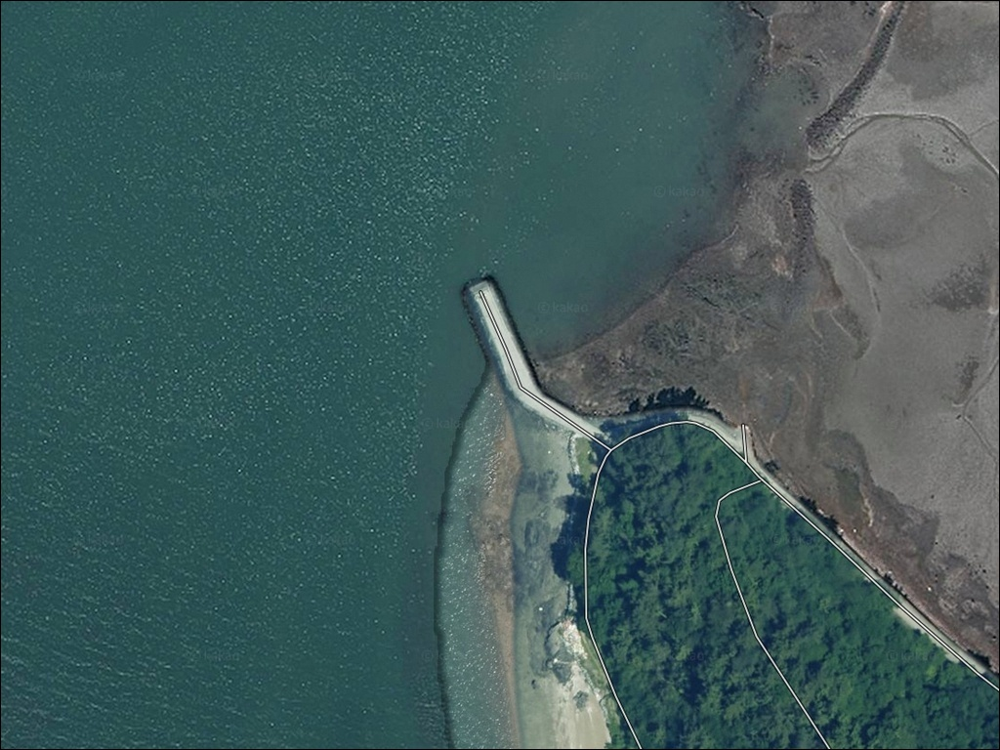
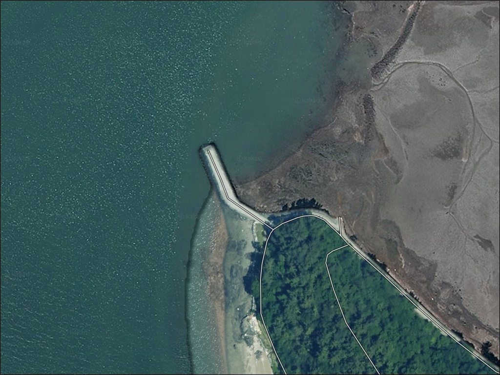
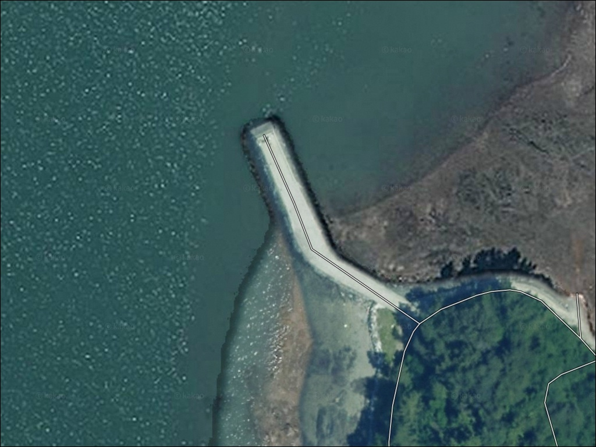
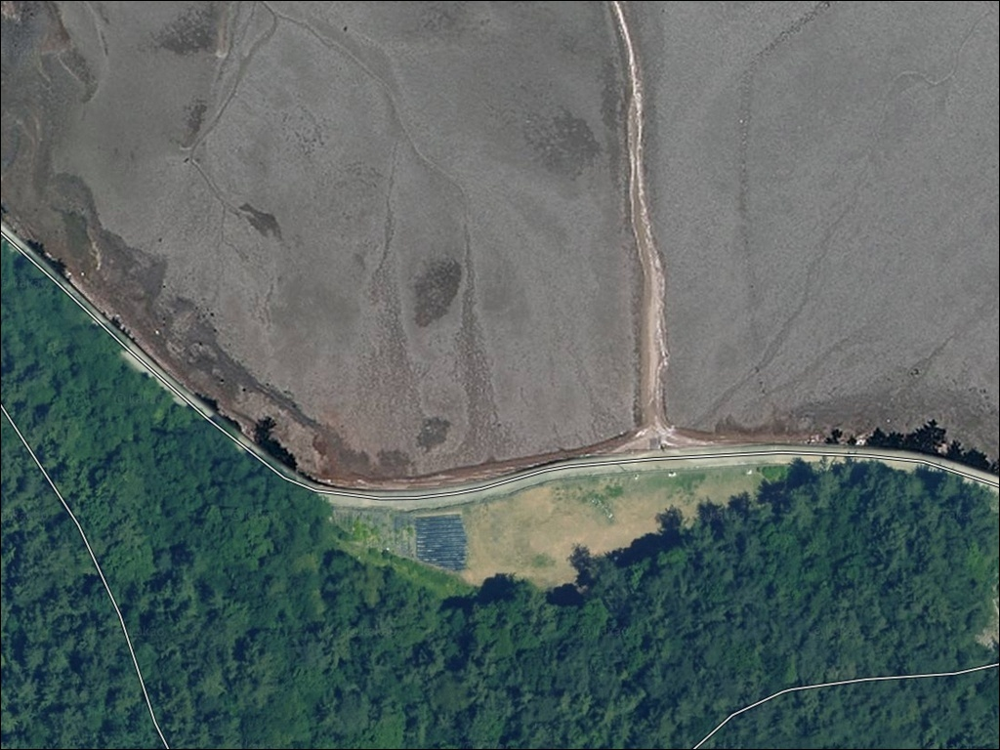
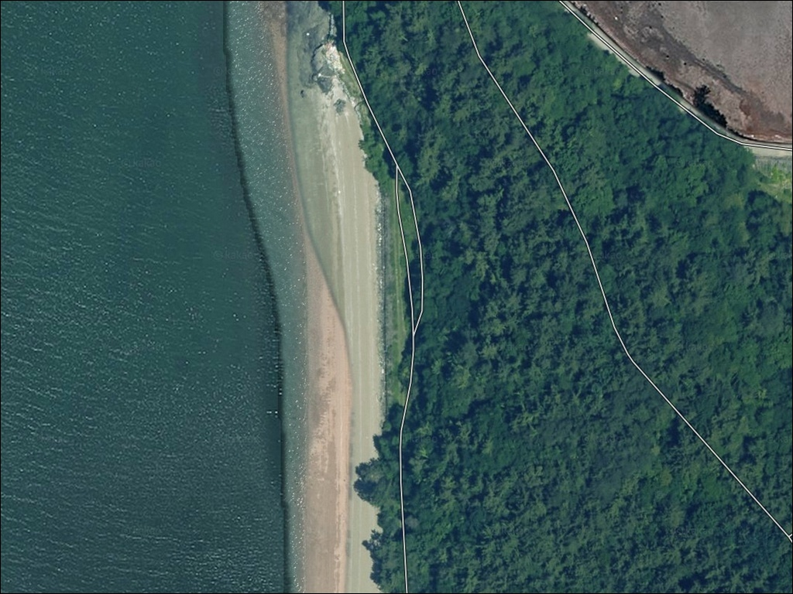
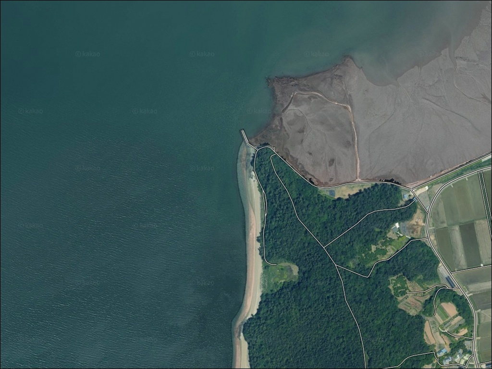
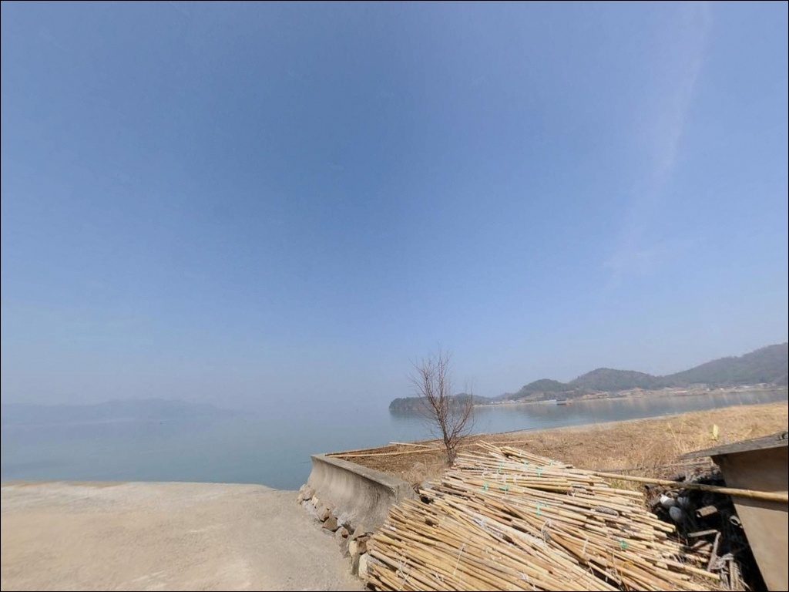
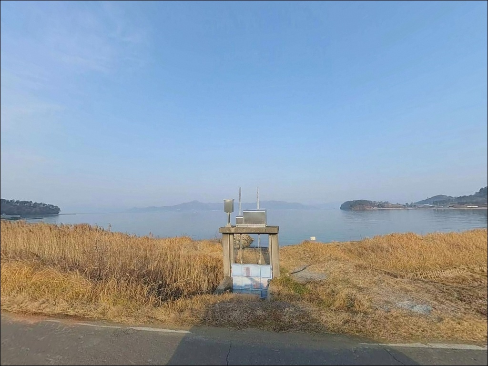
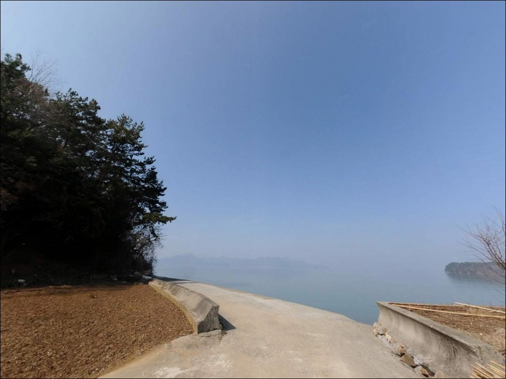

고흥 풍류리방파제 간조에는 바닥 드러나니 만조 전후에 진입해야 합니다
이 페이지에는 광고(제휴 링크 포함)가 있으며, 광고 링크를 통해 구매하면 운영자가 판매 수익 또는 수수료를 받을 수 있습니다. 포인트 사진: 카카오맵 스카이뷰·로드뷰. 이 페이지의 지도·사진 이미지는 카카오맵의 실제 서비스 이미지와 다를 수 있습니다.


포인트 안내
풍류리방파제
전남 고흥군 두원면 풍류리 산 83
고흥만 내만 방파제는 물때를 잘못 짚으면
도착하자마자 발밑이 바닥을 드러내는
상황을 맞닥뜨립니다.
간조 전후에는 수심이 1m 미만으로 낮아지는 구간이 생겨
어떤 채비를 던져도 바닥에 걸리거나
조과 자체가 불가능한 조건이 됩니다.
전남 고흥군 두원면 풍류리,
고흥만 방조제 남쪽 끝단에 자리한 이 방파제는
풍류해수욕장과 어촌체험마을 사이에서
내만 조류를 받아 안정적인 낚시 조건을 유지합니다.
원투낚시, 릴찌낚시, 갑오징어 루어까지
여러 방식이 겹치는 생활낚시형 복합 포인트입니다.
이 글은 풍류리방파제의
물때 판단 기준, 진입 동선,
낚시 여건, 차박 조건에 집중합니다.
조황 단정이나 특정 어종 보장은
이 글의 범위에 포함되지 않습니다.

1. 진입 동선과 포인트 접근성
고흥읍에서 출발할 경우
851번 지방도를 따라 북서쪽으로 이동한 뒤
고흥만 방조제 진입부에서 우회전,
약 1km 이동하면 풍류리 해안에 닿습니다.
방조제 제방도로는 포장 상태가 양호하고
급경사 구간이 없어
승용차와 일반 SUV 기준 진입에 어려움이 없습니다.
방파제 직전 구간은 왕복 1~1.5차선 수준의
농어촌 소로로 좁아집니다.
대형 캠핑카나 카라반을 끄는 차량이라면
진입 전에 위성지도로 마지막 구간을
확인하고 가는 편이 안전합니다.
교행 공간도 넉넉하지 않아
맞은편 차량과의 교행이 어렵다는 점을
염두에 두어야 합니다.
주차는 방파제 기저부 콘크리트 포장면에
차량 2~3대 수용이 가능한 수준입니다.
공간이 부족할 경우 약 1km 거리의
풍류해수욕장 주차 공간을 기점으로 잡고
도보로 이동하는 동선도 현실적인 대안입니다.

2. 차박 환경과 야간 체류 여건
방파제 기저부 공터에 차량을 세우고
낚시를 마친 뒤 그 자리에 머무는 방식은
공간이 협소해 1~2대 수준으로 한정됩니다.
풍류리 일대는 민가 밀집도가 낮고
야간 차량 통행이 거의 없는 막다른 도로 구조라
프라이버시 면에서는 나쁘지 않은 환경입니다.
야간 조명은 제한적입니다.
방파제 자체에 가로등이 설치되지 않은 구간이 있어
헤드랜턴을 포함한 개인 조명 장비는
필수로 갖춰야 합니다.
내만 특성상 파도 소음은 적어
수면 환경은 조용한 편이지만,
바람 방향에 따라 열린 해면의 영향을 받을 수 있어
기상 예보 확인은 기본입니다.
차박을 메인으로 계획한다면
방파제 자리보다 1km 거리의
풍류해수욕장을 기점으로 삼는 편이 낫습니다.
소나무림과 노지 주차 공간이 갖춰져 있고,
취사 허용 해수욕장으로 확인된 곳이라
낚시와 차박을 묶는 동선으로 효율적입니다.


3. 주변 편의시설 및 인프라 현황
풍류리방파제 반경 3km 이내에는
대형 편의점이나 마트를 기대하기 어렵습니다.
두원면 소재지 방향에 소형 슈퍼 수준의 상권이
일부 존재하는 정도입니다.
완전 자급 체제로 진입하는 것이
이 포인트에서의 현실적인 준비 방식입니다.
반경 10km권으로 이동하면
고흥읍 방면에서 광역 인프라를 이용할 수 있습니다.
고흥읍 하나로마트(영업 07:30~20:30)와
고흥이마트(영업 07:00~23:00)가
모두 고흥읍 내에 자리하고 있어
출발 전 보급은 고흥읍에서 마치는 편이 효율적입니다.
두원농협주유소는 방파제에서 약 5~6km 거리로
두원면 두원로 463에 위치합니다.
응급 상황 시에도 고흥읍까지
약 8~10km 거리로 이동이 가능하며,
고흥읍 내에 종합병원이 있어
광역 응급 대응 동선은 확보됩니다.
출발 전 연료·식수·비상약품 준비는
고흥읍에서 한번에 해결하는 것이 가장 안전합니다.

4. 물때를 모르면 허탕이 되는 이유
풍류리방파제 방문 전 가장 먼저 확인해야 할 것은
물때입니다.
고흥만은 내만형 해역으로
조류 흐름은 완만하지만
간조와 만조 사이 수심 변화 폭은
상당한 편입니다.
만조 전후 3시간이 이 포인트의 낚시 적정 시간대이며,
간조 전후에는 수심이 1m 미만으로 낮아지는 구간이 생깁니다.
바다타임에서 두원면 기준 물때를 미리 확인하고
만조 시각을 중심으로 출발 시각을 역산하는 것이
이 포인트 공략의 기본 전략입니다.
조류가 들어오는 들물 타이밍에
방파제 외항 방향으로 활성도가 올라오는 구조라
들물~만조 전후가 가장 유리한 입장 시각입니다.
고흥만 일대는 양식장과 어업 시설이
방파제 주변에 분포합니다.
채비를 투척할 때 양식 시설물 방향을
피하는 것이 기본 매너이며,
내항 쪽 선착장은 어민 작업 공간이므로
차량 주차와 낚시 채비로 방해하지 않도록 합니다.
야간 입장 시 구명조끼와 헤드랜턴은
필수입니다.

5. 지형 기반 낚시 여건 분석
풍류리방파제가 위치한 고흥만은
고흥반도와 장흥군 사이에 형성된 내만으로,
파도 영향이 거의 없고 수면이 잔잔한 편입니다.
방파제 주변은 사질과 펄이 혼재하는 바닥 구조이며,
수심은 만조 기준 3~5m 내외로 얕은 편입니다.
방파제 끝단(콧부리)에서 수심이 상대적으로 깊어지고
들물 타이밍에 조류가 외항 방향으로 흘러드는 구조입니다.
방파제 주변 수중 바닥은 여밭이 일부 섞인
사니질 구조로, 바닥층 어종이 머물기 좋은
지형 조건을 갖추고 있습니다.
방파제 끝단에서 수로 방향으로 원거리 캐스팅하면
바닥층 어종을 노릴 수 있고,
방파제 외항 측면은 릴찌와 원투 모두 가능한 구간입니다.
내항 측면은 조류가 더 약하고 수면이 잔잔해
민장대와 학꽁치 채비에 어울리는 여건입니다.
고흥만 방조제와 연결되는 수로 방향으로
들물 시 조류가 형성된다는 점이
이 포인트의 핵심 지형 특성입니다.
회유성 어종이 들물을 타고 방파제 주변을
지나는 타이밍에 조과를 기대해볼 수 있는 구조입니다.
출조 전 두원면 일대 최신 조황은 반드시 검색해 보시기 바랍니다.


6. 풍류리방파제에 어울리는 낚시 스타일
이 포인트에서 가장 기본이 되는 낚시는
원투낚시입니다.
펄과 모래가 섞인 완만한 바닥 구조와
방파제 끝단에서 수로 방향으로 열린 공간이
원투 채비에 잘 맞는 조건입니다.
갯지렁이나 크릴을 끼워 외항 방향으로 투척하면
도다리, 붕장어, 숭어를 기대해볼 수 있는 어종 구성입니다.
릴찌낚시는 방파제 끝단과 외항 측면에서
효과적으로 운용할 수 있는 방식입니다.
밑밥을 준비해 들물 타이밍에 공략하면
감성돔과 학꽁치 반응을 기대해볼 수 있습니다.
가을철 학꽁치 낚시는 이 일대 생활낚시인들이
즐겨 찾는 방식으로 자리잡혀 있습니다.
갑오징어 에깅과 문어 루어도
고흥 일대 전역에서 통하는 방식입니다.
봄철(4~5월) 야간에 에기를 이용한
갑오징어 낚시 반응이 활발해지는 시기이며,
같은 포인트에서 문어 루어를 병행하는 방식도
현실적인 선택입니다.
석축이나 방파제 측면 바닥층 탐색 시
노래미와 우럭 반응도 기대해볼 수 있습니다.

7. 조건이 맞지 않을 때의 대안 포인트
풍류리방파제에서 물때가 맞지 않거나
주차 공간이 여의치 않을 때는
고흥만 방조제 전역 제방이 첫 번째 대안입니다.
풍류리방파제에서 서쪽으로 2~3km 거리이며
동일한 고흥만 해역 패턴을 공유합니다.
방조제 제방을 따라 원투낚시와 릴찌낚시가
이뤄지는 연속 낚시 구간이 이어집니다.
두원면 같은 해역 안에서는
시산항도 5~7km 거리의 내만형 방파제로
비슷한 낚시 방식이 통하는 포인트입니다.
풍류리를 처음 찾는다면
고흥만 방조제 일대를 기점으로 잡고
풍류리방파제를 병행 탐색하는 동선이
효율적인 방법입니다.
차박 기점을 옮겨야 할 경우에는
대전해수욕장도 두원면 내에서
5~8km 거리에 위치한 소나무숲 차박 명소입니다.
풍류해수욕장과 함께
이 권역 차박 동선의 양 축으로 활용할 수 있습니다.

물때 하나만 맞추면
풍류리방파제가 달리 보입니다
원투낚시나 릴찌낚시를 즐기는 낚시인,
특히 조용한 내만 방파제에서
복수 방식으로 가볍게 운용하고 싶은 분이라면
풍류리방파제의 지형 조건은
잘 어울리는 구조입니다.
고흥만 해역 특성상 감성돔, 도다리, 숭어, 학꽁치,
갑오징어까지 어종 구성이 고루 걸쳐 있어
봄~가을 시즌 동안 다양한 방식으로 노릴 수 있는 포인트입니다.
반면 물때 계산 없이 간조 타이밍에 도착하거나,
대형 차량을 몰고 마지막 소로까지 진입하려 하면
낚시 시작 전부터 불필요한 소모가 생깁니다.
물때 확인, 진입로 사전 점검, 자급 준비,
이 세 가지를 갖추고 가면
기대 이상의 조과를 만날 가능성이 있는 곳입니다.
차박을 겸하는 여정이라면
1km 거리의 풍류해수욕장 소나무림에 자리를 잡고
방파제와 해수욕장 앞바다를
번갈아 공략하는 동선이
낚시와 차박을 자연스럽게 연결하는
가장 현실적인 계획입니다.